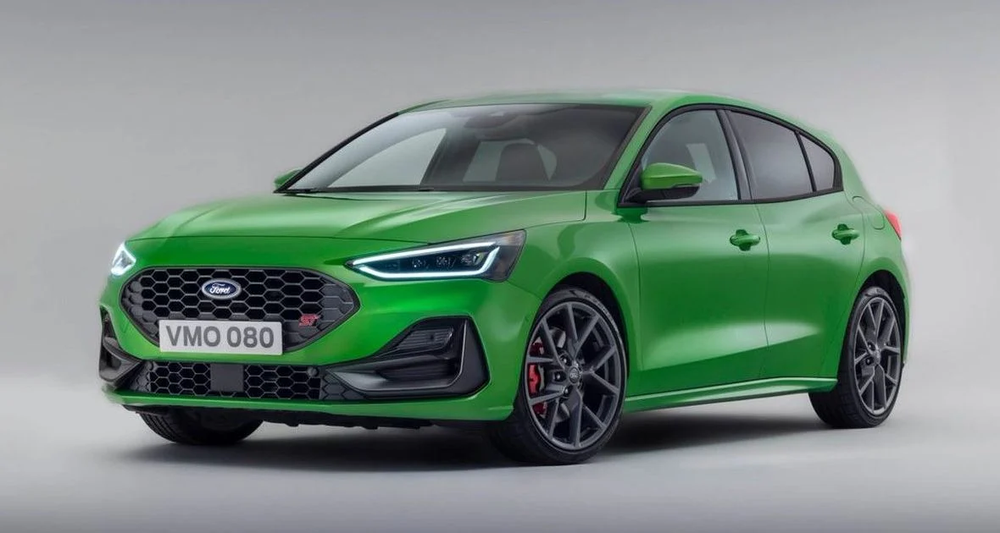
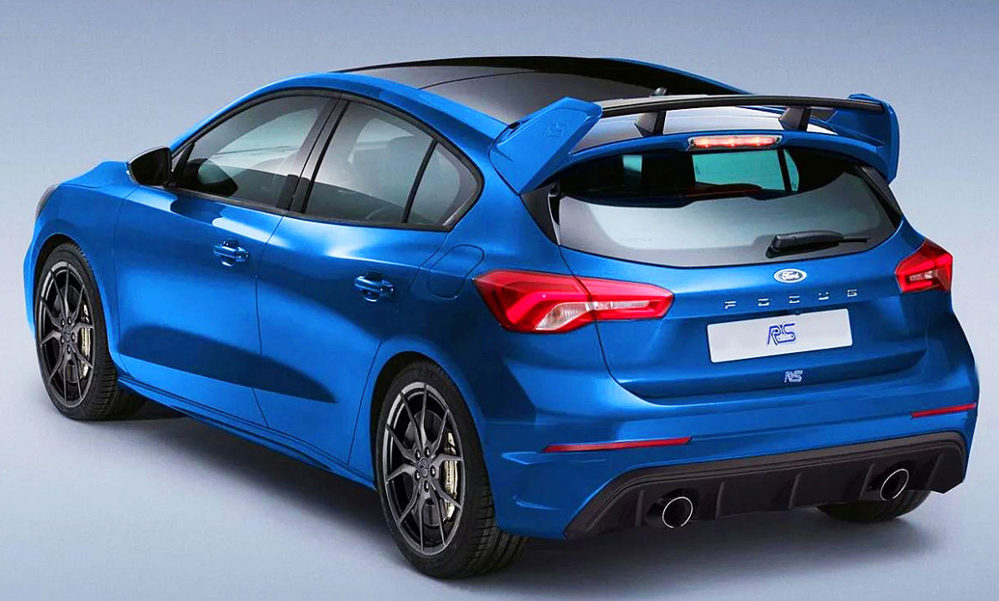

Ford Focus ST
 
El focus st es verdaderamente una bestia...
Focus ST
El golf R tranquilamente podria ser un auto de competicion pero que a la vez se adapta a un uso urbano
VW Golf R
El focus st es verdaderamente una bestia...
Focus ST
El rs tiene un motor muy poderoso, chasis y suspensiones de un verdadero gt
Megane RS| AUTO | 0 A 100KM | VEL.MAX | PRECIO |
|---|---|---|---|
| Golf R | 3,9s | 250km | Usd 43000 |
| Focus ST | 4,5s | 265km | Usd 37000 |
| Megane RS | 4,1s | 258km | Usd 36000 |